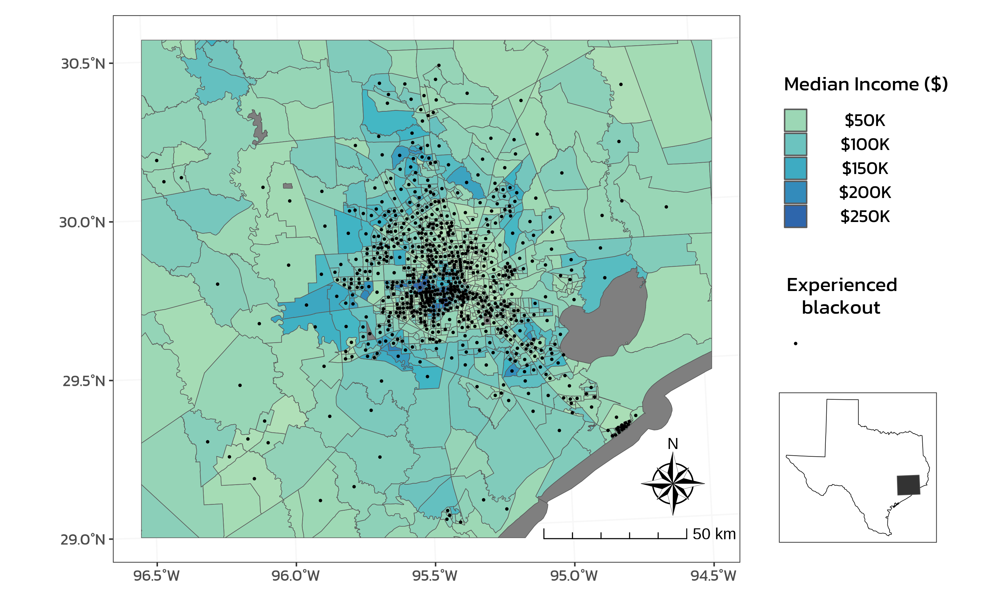

Geospatial extent of power outages in Houston, Texas caused by Winter Storm Uri in 2021
R
Quarto
Git
Spatial
EJ
Spatial analysis using satellite data
Author
Kristin Art
Published
December 16, 2023
Power lines damaged by Winter Storm Uri in February 2021. Photograph sourced from https://www.crawco.com/blog/energy-companies-deal-with-the-aftermath-of-winter-storms-uri-and-viola
Geospatial extent of power outages in Houston, Texas caused by Winter Storm Uri in 2021
This blog post includes an analysis of the spatial extent of power outages caused by winter storm Uri in 2021. It also explores the relationship between the blackouts and socioeconomic factors. The full analysis is available in this Github repository.
Research Question
Which communities in Houston, Texas experienced power outages during the Great Texas Freeze and are socioeconomic factors predictors of community recovery from a power outage?
Background
In February of 2021, the southern United States (US) experienced an extreme cold snap caused by a mix of climate conditions. In central Texas, some areas experienced between 6-9 consecutive days of freezing temperatures, which broke the state’s records for the longest freezing streak ever recorded. 1 The Great Texas Freeze, as some call it, caused a widespread failure of electricity systems that were not equipped to handle such conditions. This power crisis left millions of Texas residents to fend without heat and electricity for up to several days. 2 At the peak of the power outage, nearly 10 million people were in the dark, without heat, and unable to cook food. 3
Research has found that communities of color and other historically marginalized communities in Texas were hit especially hard by Winter Storm Uri, which occurred soon after Hurricane Harvey and the COVID-19 pandemic. One study found that African American communities in the Houston area were among the first to lose power and experience elongated cold due to poor infrastructure and lack of insulation. 4 Post-storm, many households faced large utility bills from the higher price of electricity caused by line-loss charges. 5 Another study found that communities in Texas with higher proportions of residents from underrepresented groups were burdened with a disproportionate amount of load shed during Winter Storm Uri compared to counties with higher proportions of residents who identify as White. 6
Extreme weather events are becoming more common due to changes in global and local climates. It is therefore important to increase community resiliency any way we can. We can learn from extreme events that have already occurred to improve infrastructure, policies, and predictive weather models. 7 This is especially critical to ensure that already marginalized communities are not disproportionately impacted by climate change events.
In this analysis, I explore the geospatial extent of the power outages in the Houston, Texas area that occurred between February 11-20, 2021. I estimate the number of homes that experienced a blackout and determine whether socioeconomic factors are predictors of community recovery from a power outage.
Data
Night Lights
I used remotely-sensed night lights data to estimate homes that experienced a blackout. First, I explored satellite images using NASA Worldview to find scenes that could be used as pre- and post-storm images. The scenes for several days around and during the storm had too much cloud cover to be useful, but the scenes from February 7, 2021 and February 16, 2021 were clear, contrasting images. I decided to use these to visualize the extent of the power outages, keeping in mind that my “after” image occurred before the third major storm of the series.
In particular, I used data from the Visible Infrared Imaging Radiometer Suite (VIIRS) of NASA’s Suomi satellite. VIIRS data was downloaded from Level-1 and Atmospheric Archive & Distribution System Distributed Active Archive Center (LAADS DAAC). These data are distributed in 10x10 degree tiles of sinusoidal equal-area projection where tiles are identified by their horizontal and vertical position in the grid. Houston is on the border of two tiles: h08v05 and h08v06. Therefore, I downloaded two tiles per date to examine the entire area. These data were processed and are available in the data/VNP46A1 folder of my Github repository. The files are as follows:
VNP46A1.A2021038.h08v05.001.2021039064328.h5.tif: tile h08v05, collected on 2021-02-07
VNP46A1.A2021038.h08v06.001.2021039064329.h5.tif: tile h08v06, collected on 2021-02-07
VNP46A1.A2021047.h08v05.001.2021048091106.h5.tif: tile h08v05, collected on 2021-02-16
VNP46A1.A2021047.h08v06.001.2021048091105.h5.tif: tile h08v06, collected on 2021-02-16
Roads
One challenge with using night lights data to study blackouts is light pollution. Highways typically account for a large portion of the night lights that can be seen from space (see Google’s Earth at Night). Therefore, I excluded areas near highways in my analysis to minimize falsely identifying areas with reduced traffic as areas with reduced power.
To do so, I use data from OpenStreetMap (OSM), a collaborative project that created publicly available geographic data of the world. I used Geofabrik’s download sites to retrieve a shapefile of all highways in Texas and prepared a Geopackage containing just the subset of roads that intersect the Houston metropolitan area. This Geopackage is available in the /data folder of my Github repository in the following file:
gis_osm_roads_free_1.gpkg
Homes
I also used data from OpenStreetMap to estimate the number of homes in the geographic area of interest. I downloaded these data from Geofabrick and prepared a GeoPackage containing only houses in the Houston metropolitan area.This Geopackage is available in the /data folder of my Github repository in the following file:
gis_osm_buildings_a_free_1.gpkg
Socioeconomic Characteristics
Lastly, I used socioeconomic data for census tracts in 2019 from the U.S. Census Bureau’s American Community Survey. These data are in the ACS_2019_5YR_TRACT_48.gdb folder, which is an ArcGIS “file geodatabase”, a multi-file proprietary format that’s roughly analogous to a GeoPackage file. Each layer of this folder contains a subset of the fields documents in the ACS metadata; note that the layer that contains geometry information is separate from the layers that contain ACS attributes. Therefore, I combined the geometry with the ACS attributes in my script to get a usable feature layer.
Methods and Results
Identify locations of blackouts
I began my analysis by identifying the locations in Houston that experienced a power outage. To do so, I began by reading in the night lights tiles and combining them into a single stars object for each date (2021-02-07 and 2021-02-16). I used the st_mosaic() function from the stars() package instead of the terra() package for raster handling because of its slightly better computational power.
Code
# load night light tilesh08v05_20210207 <- stars::read_stars(here::here("data/VNP46A1/VNP46A1.A2021038.h08v05.001.2021039064328.tif"))h08v06_20210207 <- stars::read_stars(here::here("data/VNP46A1/VNP46A1.A2021038.h08v06.001.2021039064329.tif"))h08v05_20210216 <- stars::read_stars(here::here("data/VNP46A1/VNP46A1.A2021047.h08v05.001.2021048091106.tif"))h08v06_20210216 <- stars::read_stars(here::here("data/VNP46A1/VNP46A1.A2021047.h08v06.001.2021048091105.tif"))# combine tiles for each datefeb7 <- stars::st_mosaic(h08v05_20210207, h08v06_20210207)feb16 <- stars::st_mosaic(h08v05_20210216, h08v06_20210216)# exploratory plots/ checksplot(h08v05_20210207)plot(h08v06_20210207)plot(feb7)
Next, I created a blackout mask by finding the change in night lights intensity (presumably) caused by the storms. I then reclassified the difference raster and assumed that any location that experienced a drop of more than 200 nW cm-2sr-1 experienced a blackout. Finally, I assigned NA values to all locations that experienced a drop of less than 200 nW cm-2sr-1.
Code
# find the difference in light intensity before/ after the storm and only select the differences > 200, turn areas less than 200 to NA values.lights_diff <- (feb7 - feb16)lights_diff[lights_diff <=200] <-NA# exploratory plots/ checkslights_diffplot(feb7)plot(feb16)plot(lights_diff)
I then used the st_as_sf() function to vectorize the blackout mask and st_make_valid() to fix any invalid geometries.
Next, I created a polygon of the Houston metropolitan area and cropped the vectorized mask to that region. I defined the Houston metropolitan area with the following coordinates: (-96.5, 29), (-96.5, 30.5), (-94.5, 30.5), (-94.5, 29). I then used st_polygon() to convert these coordinated into a polygon and st_sfc() to make a simple features collection where I assigned the same coordinate reference system (CRS) as the night lights data. I then went on to crop, or spatially subset, the blackout mask to the Houston area and re-projected it to EPSG:3083 (NAD83 / Texas Centric Albers Equal Area).
Code
# create a polygon for the houston areahouston_coords <-list(rbind(c(-96.5, 29), c(-96.5, 30.5), c(-94.5, 30.5), c(-94.5, 29), c(-96.5, 29))) # last point of the polygon needs to be same as first to close ithouston_polygon <- sf::st_polygon(houston_coords) # input to st_polygon must be a list# set houston sf crs to crs of blackout/ night lights datahouston_sf <- sf::st_sfc(houston_polygon, crs = sf::st_crs(blackout_mask))# test that crs matchinvisible(ifelse(sf::st_crs(houston_sf) == sf::st_crs(blackout_mask), (print("TRUE, CRS of both sf objects match")), (print("FALSE, check that CRS of both sf objects match"))))# crop blackout mask using houston sfblackout_crop <- blackout_mask[houston_sf, op = st_intersects]# test that new object has fewer valuesinvisible(ifelse(nrow(blackout_crop) <nrow(blackout_mask), (print(paste0("TRUE, cropped object has ", (nrow(blackout_mask) -nrow(blackout_crop)), " fewer values than original"))), (print("FALSE, cropped object does not have fewer values than original"))))# reproject to EPSG 3083blackout_crop_3083 <- sf::st_transform(blackout_crop, crs ="EPSG:3083")# exploratory plots/checkssf::st_crs(blackout_crop_3083)plot(blackout_crop_3083)
Then, I defined a SQL query and used st_read() to only load highways data from the OSM roads Geopackage. This way, I avoided reading in data we don’t need, which can be computationally expensive. After loading in the highway data, I reprojected it to EPSG:3083. Next, I used the st_buffer() function to identify areas within 200m of the included highways and st_union() to dissolve the resulting buffers. Lastly, I used st_difference() to remove the 200m buffered highways out of my cropped blackout mask.
Code
# load highways data using SQL queryquery <-"SELECT * FROM gis_osm_roads_free_1 WHERE fclass='motorway'"highways <- sf::st_read(here::here("data/gis_osm_roads_free_1.gpkg"), query = query, quiet =TRUE)# reproject to EPSG 3083highways_3083 <- sf::st_transform(highways, crs ="EPSG:3083")# create dissolved buffershighways_200mbuffer <- sf::st_buffer(highways_3083, dist =200) %>%# EPSG 3083 is projected in meters, so distance units are meters sf::st_union()# exploratory plotsplot(highways_200mbuffer)class(highways_200mbuffer)# test that crs matchinvisible(ifelse(sf::st_crs(highways_200mbuffer) == sf::st_crs(blackout_crop_3083), (print("TRUE, CRS of both sf objects match")), (print("FALSE, check that CRS of both sf objects match"))))# mask highways out of blackout datablackout_highways <- blackout_crop_3083[highways_200mbuffer, op = st_difference]# test that length of new blackout mask is shorter than length of old blackout maskinvisible(ifelse(nrow(blackout_highways) <nrow(blackout_crop_3083), (print(paste0("TRUE, new sf object is shorter than old sf object by ", (nrow(blackout_crop_3083) -nrow(blackout_highways)), " rows"))), (print("FALSE, new sf object is NOT shorter than old sf object, check crop methods"))))# test that all values in the new blackout mask are uniqueinvisible(ifelse(nrow(unique(blackout_highways)) ==nrow((blackout_highways)), (print("TRUE, all values in new sf object are unique")), (print("FALSE, not all values in new sf object are unique"))))# exploratory plotsplot(blackout_highways)plot(blackout_crop)plot(highways_200mbuffer)
Working with spatial data can be challenging, so I incorporated plenty of exploratory plots and checks throughout the above process. As a visual learner, I enjoy plotting my data after every step to identify whether the code did exactly what I wanted it to. I also write and use checks that will print out TRUE/ FALSE answers to questions like:
“Do the CRS of two sf objects match?”
“Does the outcome of a crop have fewer rows than the original?”
“Are there any duplicate values in the sf object or are they all unique?”
Debugging is a lot easier when I build these checks in along the way.
Identify homes impacted by blackouts
The second phase of my approach was to identify which homes were within the area of my blackout mask. To do so, I began by using st_read() and another SQL query to load in residential buildings from the OSM Geopackage. I reprojected these data to EPSG:3083.
Code
# load buildings data using SQL queryquery <-"SELECT *FROM gis_osm_buildings_a_free_1 WHERE (type IS NULL AND name IS NULL) OR type in ('residential', 'apartments', 'house', 'static_caravan', 'detached')"buildings <- sf::st_read(here::here("data/gis_osm_buildings_a_free_1.gpkg"), query = query, quiet =TRUE)# reproject to crs epsg 3083buildings_3083 <- sf::st_transform(buildings, crs ="EPSG:3083")
Then, I used st_intersects() to find all the homes that overlapped with the blackouts. I found that 157,411 homes in Houston were impacted by the blackout, which is 33% of all residential buildings in the area.
Code
# test that crs matchinvisible(ifelse(sf::st_crs(buildings_3083) == sf::st_crs(blackout_highways), (print("TRUE, CRS of both sf objects match")), (print("FALSE, check that CRS of both sf objects match"))))# find the number of homes that are in blackout areasblackout_homes <- buildings_3083[blackout_highways, op = st_intersects] %>% dplyr::select("osm_id", "fclass", "geom") %>%st_make_valid()# test that all values in the new sf are uniqueinvisible(ifelse(nrow(unique(blackout_homes)) ==nrow((blackout_homes)), (print("TRUE, all values in new sf object are unique")), (print("FALSE, not all values in new sf object are unique"))))# count and report number of homes/ rowsblackout_homes_logical <-nrow(blackout_homes)n <-sum(blackout_homes_logical)print(paste0("The number of homes within the blackout area is ", n, ", which is ", round(100* n /nrow(buildings_3083)), "% of all buildings in the area"))
Investigate socioeconomic factors
The final phase was to investigate how socioeconomic factors related to the homes that did and did not experience blackouts.
I used st_read() to load in the ACS data on median income and geometries, which were stored in the following geodatabase layers: - geometries are stored in the ACS_2019_5YR_TRACT_48_TEXAS layer - income data is stored in the X19_INCOME layer; median income field B19013e1
Next, I joined the income data to the census tract geometries based on the shared GEOIDs. I then used st_join() to spatially join the census tract data with the buildings data.
Code
# combine layers based on GEOID, convert to sf objectsocioeconomic <- socioeconomic_geom %>% dplyr::select("Shape_Length", "Shape_Area", "GEOID_Data", "Shape") %>%rename("GEOID"="GEOID_Data") %>%full_join(income, by ="GEOID") %>% janitor::clean_names()# reproject to crs epsg 3083socioeconomic_3083 <- sf::st_transform(socioeconomic, crs ="EPSG:3083")houston_3083 <- sf::st_transform(houston_sf, crs ="EPSG:3083")# crop tracts data to houston areatracts_houston <- sf::st_crop(socioeconomic_3083, houston_3083)# test that crs matchinvisible(ifelse(sf::st_crs(socioeconomic_3083) == sf::st_crs(blackout_homes), (print("TRUE, CRS of both sf objects match")), (print("FALSE, check that CRS of both sf objects match"))))# spatially join census tract data to buildings datatracts_buildings <- sf::st_join(socioeconomic_3083, blackout_homes, join = st_contains, largest =TRUE)# filter to only tracts that had buildings that experienced blackoutstracts_blackouts <- tracts_buildings %>%filter(fclass =="building")
Next, I created a map of median income by census tract and designated which tracts experienced blackouts.
Code
# load shape of texastx <- us_states %>% janitor::clean_names() %>%filter(name =="Texas") %>%st_transform(crs ="EPSG:3083")# create plot of texasplot_2 <-ggplot() +geom_sf(data = tx, col ="black", fill ="white") +geom_sf(data = houston_sf, fill ="grey20") +theme_bw() +theme(axis.text =element_blank(),axis.ticks =element_blank(),panel.grid.major =element_blank(),panel.grid.minor =element_blank(),plot.background =element_rect(fill ="transparent", color =NA),panel.background =element_rect(fill ="transparent", color =NA) )# create centroids for tracts with blackoutstracts_blackouts_centroids <- sf::st_centroid(tracts_blackouts)#palette from colorbrewer2.org - colorblind safecolor_pal <-c('#ffffcc','#a1dab4','#41b6c4','#2c7fb8','#253494')# plot median income by census tractsplot_4 <-ggplot() +geom_sf(data = tracts_houston, aes(fill = income)) +scale_fill_gradientn(colors = color_pal, values = scales::rescale(c(-Inf, 50000, 100000, 150000, 200000, 250000, Inf)), breaks =c(50000, 100000, 150000, 200000, 250000), labels =c("$50K", "$100K", "$150K", "$200K", "$250K")) +labs(fill ="Median Income ($)") +geom_sf(data = tracts_blackouts_centroids, size =0.5, aes(color ="")) +scale_colour_manual(name ="Experienced \nblackout", values ="black") +annotation_scale(location ="bl", pad_x =unit(4.38, "in"), pad_y =unit(0.23, "in"), style ="ticks") +annotation_north_arrow(location ="bl",pad_x =unit(4.9, "in"),pad_y =unit(0.4, "in"),style = ggspatial::north_arrow_nautical() ) +theme_bw() +theme(panel.grid =element_line(color ="grey95"),legend.position=c(1.18, .6))+guides(color =guide_legend(order =2), fill=guide_legend(order =1))plot_4# combine plot and texas insetplot_5 <- plot_4 +inset_element(plot_2, left =1.02, bottom =0.005, right =1.28, top =0.4, align_to ="plot") plot_5

Figure 1: Median income of census tracts in Houston, Texas. Grey lines represent boundaries of census tracts and color shading indicates median income of each tract. Black dots denote census tracts that experienced blackouts. The inset map displays the location of the bounding box of Houston relative to the boundary of Texas.
Lastly, I plotted the distribution of median income to visualize the spread of the data for tracts that experienced a blackout and those that did not.
Code
# select income column only for blackout tractsincome_blackouts <- tracts_blackouts %>% dplyr::select(income) %>%st_drop_geometry()# select income column for non-blackout tractsincome_no_blackouts <- tracts_buildings %>%filter(is.na(fclass)) %>% dplyr::select(income) %>%st_drop_geometry()# combine income dataincome_distr <-rbind(cbind(income_blackouts, group ="Blackouts"), cbind(income_no_blackouts, group ="No blackouts"))# remove rows with non-finite valuesincome_distr <- income_distr[is.finite(income_distr$income), ]# plot income distributionplot_6 <-ggplot(income_distr) +geom_boxplot(aes(x = group, y = income, fill = group), notch =TRUE) +scale_y_continuous(labels = scales::label_currency(), expand =c(0, 0)) +scale_fill_manual(values =c("#6BB9C7", "#EDB458")) +labs(x ="Tract type", y ="Income ($)", fill ="Tract type") +theme_bw() +theme(legend.position ="none",panel.grid =element_line(color ="grey95"))plot_6 plot_7 <-ggplot(income_distr) +geom_density(aes(x = income, ..scaled.., col = group, fill = group), size =1.5, alpha =0.5) +scale_x_continuous(labels = scales::label_currency(),expand =c(0, 0)) +scale_y_continuous(expand =c(0, 0), limits =c(0, 1.02)) +labs(col ="Tract type", x ="Income ($)", y ="Density") +scale_color_manual(values =c("#6BB9C7", "#EDB458")) +scale_fill_manual(values =c("#6BB9C7", "#EDB458")) +geom_vline(xintercept =60414, linetype ="dashed", color ="#4F9BB2")+geom_vline(xintercept =55128, linetype ="dashed", color ="#EC8848")+theme_bw() +theme(legend.position ="bottom",panel.grid =element_line(color ="grey95"))plot_7plot_8 <- (plot_6 +plot_layout(guides ="collect") &theme(legend.position ="bottom")) + (plot_7 +theme(legend.position ="none")) +plot_annotation(tag_levels ="A") plot_8
Figure 2: Distribution of median income between census tracts in Houston that did and did not experience blackouts. A) Box and whisker plot depicting the distribution of median income within tracts that experienced blackouts (blue) and those that did not (orange). Black lines represents median income value, lower hinges represents the first quartile, upper hinges represents the third quartile, whiskers represent upper and lower range up to 1.5 times the IQR, and dots represent outliers. B) Density plot depicting the proportion of total values for median income within tracts that experienced blackouts (blue) and those that did not (orange). Blue and orange dotted lines depict median values of median income for each group respectively.
Conclusion
Overall, I found that homes that experienced a storm-induced power outage had a slightly higher median income than homes that did not experience a power outage (Figure 1, Figure 2). However, the actual difference between these two groups is rather small and there is significant overlap between the two groups (Figure 2).
This analysis was also limited to one socioeconomic variable, income. If I include other variables like population density, ethnicity, age, etc., the overall results might be different. Most of the census tracts that experienced blackouts are concentrated in the center of the Houston area, which could reflect relationships between income, population density, and general electricity usage.
Furthermore, I defined areas that experienced blackouts as those that experienced a \(200 nW cm^{-2} sr{-1}\) decrease in light intensity between February 7th and February 16th for this study. This definition does not take into account the length of power outages, use of back-up generators, or how quickly power was restored to a census tract. I was limited to using satellite imagery from these two dates as a proxy because of cloudy atmospheric conditions during the other days, so it is difficult to characterize the temporal nature of the blackouts.
I plan to explore the relationship between other socioeconomic factors and the spatial footprint of the power outages as a next step.
Footnotes
The Great Texas Freeze: February 11-20, 2021 (2023). National Centers for Environmental Information. National Oceanic and Atmospheric Administration. [https://www.ncei.noaa.gov/news/great-texas-freeze-february-2021]↩︎
Doss-Gollin, J., Farnham, D.J., Lall, U., & Modi, V. (2021). How unprecedented was the February 2021 Texas cold snap? Environmental Research Letters, 16 (6). [DOI 10.1088/1748-9326/ac0278]↩︎
The Great Texas Freeze: February 11-20, 2021 (2023). National Centers for Environmental Information. National Oceanic and Atmospheric Administration. [https://www.ncei.noaa.gov/news/great-texas-freeze-february-2021]↩︎
Li, Z., Li, X., Wang, Y., Quiring, S.M. (2019). Impact of climate change on precipitation patterns in Houston, Texas, USA. Anthropocene, 25. [DOI10.1016/j.ancene.2019.100193]↩︎
Li, Z., Li, X., Wang, Y., Quiring, S.M. (2019). Impact of climate change on precipitation patterns in Houston, Texas, USA. Anthropocene, 25. [DOI10.1016/j.ancene.2019.100193]↩︎
Kaufmann, R.K., Kelly-Fair, M., Schroer, C. (2024). Distributive energy justice: Who lost power in Texas during the 2021 winter storm? Energy Research & Social Science, 109. [https://doi.org/10.1016/j.erss.2024.103416]↩︎
Kaufmann, R.K., Kelly-Fair, M., Schroer, C. (2024). Distributive energy justice: Who lost power in Texas during the 2021 winter storm? Energy Research & Social Science, 109. [https://doi.org/10.1016/j.erss.2024.103416]↩︎